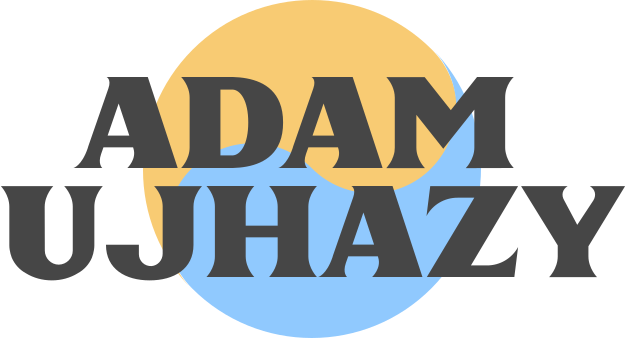

Ahoj! Som 17-ročný študent a junior dizajnér a web developer so snom premeniť tento zábavný koníček na niečo veľké! Momentálne experimentujem s viacerými typmi dizajnu: UI/UX, Instagram, reklamná grafika a ďalšie. Zaujímam sa aj o psychológiu, hudbu a technológiu. Milujem byť kreatívny a rád by som to využil na zlepšenie dňa ľudí.
Pracujem s technológiami:
GRAFIKA
WEB
Moje Grafické Projekty
Reklamná Grafika
Jendá sa o návrh na Pohoda Festival, s ktorým som súťažil v krajskom kole Grafickej súťaže ZENIT.
Instagram Grafika
Všetky z uvedených grafík sú z instagramu našeho školského eŠportu pre ktorý aktívne pracujem na rozličnej grafike.
UI/UX Dizajn
UI/UX dizajn bol práve ten ktorý ma najviac zaujal pri mojích začiatkoch, môžete vidiet dizajn pre obchod s oblečením ktorým som sa snažil zaujať jednu firmu a druhým dizajnom je návrh pre súťaž ZENIT.
Logá
Logá sú veľmi zaujímavá časť dizajnu, kde sa zdá že je to jednoduché ale nakoniec na ňom miniete najviac času z projektu. Tuna možno vidieť logo pre školský eŠport tím a návrh ktorý som spracoval na sútaži ZENIT.

Moje Webové Projekty
Powacraft
Jedná sa o stránku pre komunitný server hry Minecraft stránku som sa snažil oživiť práve tématikou danej hry a je to jedna z stranok na ktoré som najviac hrdý
Tento Web vznikol kvôli projektu pre školu, jedná sa o stránku pre vymyslený Music streaming servis zvaný Altstim, kde som využil prevažne tajemnú tématiku spoločne s veľa hravými farbami.
 Kontakt
Kontakt